▸ Répondre aux incidents et aux demandes d’assistance et d’évolution
▸ Développer la présence en ligne de l’organisation
▸ Travailler en mode projet
▸ Mettre à disposition des utilisateurs un service informatique
▸ Organiser son développement professionnel
🍃 Datte
🍃 Datte – ▸ Gérer le patrimoine informatique
Sous-compétence
Description de l'action
Illustration(s)
▸ Recenser et identifier les ressources numériques
J'ai recensé les différentes ressources numériques nécessaires au bon fonctionnement de Datte, notamment les modules backend, les services tiers à intégrer, et les outils de développement. Ce travail m’a permis de structurer l’architecture de Datte en fonction des besoins techniques réels.
▸ Exploiter des référentiels, normes et standards
J’ai intégré les principes SOLID et des normes d’architecture logicielle (comme REST pour les APIs) dans la conception de Datte. Cela garantit la maintenabilité et l’évolutivité de la plateforme.
▸ Mettre en place et vérifier les niveaux d’habilitation
Dans Datte, j’ai conçu un système de rôles et permissions (admin, manager, acheteur, etc.) permettant un contrôle précis des accès aux fonctionnalités. J’ai aussi prévu une logique d’héritage et de segmentation des droits par module.
🍃 Datte – ▸ Répondre aux incidents et aux demandes d’assistance et d’évolution
Sous-compétence
Description de l'action
Illustration(s)
▸ Collecter, suivre et orienter des demandes
À la suite de publications sur Datte, j’ai reçu plusieurs retours techniques d’utilisateurs ou développeurs intéressés. J’ai pris en compte ces remarques pour ajuster certaines priorités ou idées de modules, ce qui m’a permis d’expérimenter une première approche de collecte et de traitement de demandes autour d’un projet en cours.
🍃 Datte – ▸ Développer la présence en ligne de l’organisation
Sous-compétence
Description de l'action
Illustration(s)
▸ Participer à la valorisation de l’image de l’organisation sur les médias numériques en tenant compte du cadre juridique et des enjeux économiques
J’ai commencé à valoriser l’image de Datte via des publications sur LinkedIn et Instagram, en présentant l’identité du projet et ses objectifs. Cette communication m’a permis de positionner Datte dans un écosystème tech, tout en respectant les enjeux de transparence et de clarté.
🍃 Datte – ▸ Travailler en mode projet
Sous-compétence
Description de l'action
Illustration(s)
▸ Analyser les objectifs et les modalités d’organisation d’un projet
Avant de lancer Datte, j’ai défini une feuille de route claire, structuré les fonctionnalités par priorité, et identifié les risques liés à la scalabilité et à la modularité. L’organisation du projet repose sur une vision produit forte avec des objectifs à moyen et long terme.
▸ Planifier les activités
J’ai structuré le développement de Datte en sprints non formels, avec une organisation par lots fonctionnels. Chaque module (utilisateurs, panier, notifications, etc.) a été planifié selon son niveau de complexité et d’interdépendance.
🍃 Datte – ▸ Mettre à disposition des utilisateurs un service informatique
Sous-compétence
Description de l'action
Illustration(s)
▸ Déployer un service
J’ai effectué des déploiements de versions alpha de Datte en environnement de test pour valider l’interconnexion des modules. J’ai également mis en place une architecture de déploiement reproductible, prête pour la production.
▸ Accompagner les utilisateurs dans la mise en place d’un service
J’ai commencé à documenter la plateforme Datte afin d’en faciliter la prise en main pour les développeurs. L’objectif est de rendre l’outil compréhensible et adaptable pour différents types de projets.
🍃 Datte – ▸ Organiser son développement professionnel
Sous-compétence
Description de l'action
Illustration(s)
▸ Mettre en place son environnement d’apprentissage personnel
J’ai organisé ma veille technique et ma montée en compétences via des lectures ciblées (clean architecture, design d’API, gestion modulaire) pour nourrir le développement de Datte. Mon environnement inclut des outils d’organisation, de code et de documentation adaptés.
▸ Mettre en œuvre des outils et stratégies de veille informationnelle
J’utilise régulièrement des plateformes comme GitHub, Medium, Stack Overflow et des newsletters spécialisées pour suivre les tendances liées aux architectures backend modulaires et aux bonnes pratiques DevOps.
▸ Gérer son identité professionnelle
J’ai commencé à construire ma présence en tant que créateur de Datte, notamment via la structuration de la communication du projet et la réflexion autour de l’image professionnelle que je veux véhiculer.
▸ Développer son projet professionnel
Le projet Datte s’inscrit pleinement dans mon projet professionnel : créer une solution technique généralisable, modulaire et puissante. Ce projet est un levier pour développer mes compétences, mon réseau, et mes opportunités professionnelles.
🦋 Butterfly Packaging
🦋 Butterfly Packaging – ▸ Gérer le patrimoine informatique
Sous-compétence
Description de l'action
Illustration(s)
▸ Exploiter des référentiels, normes et standards adoptés par le prestataire informatique
Pour respecter les pratiques de l’ESN, j’ai suivi les conventions de nommage, la structure de projet imposée, ainsi que les bonnes pratiques Vue.js définies par le référentiel interne. J’ai également respecté les normes du responsive design établies (grille, media queries, breakpoints).
▸ Gérer des sauvegardes
Le code était régulièrement sauvegardé via un dépôt Git interne, avec des commits fréquents et des branches pour chaque fonctionnalité. Cela a permis un suivi précis de l’évolution du projet et une sécurité face à toute régression.
🦋 Butterfly Packaging – ▸ Travailler en mode projet
Sous-compétence
Description de l'action
Illustration(s)
▸ Planifier les activités
J’ai organisé mes tâches en suivant un planning défini par l’équipe, avec des jalons hebdomadaires. Chaque page à rendre responsive était planifiée dans un ordre logique, en accord avec les besoins de l’entreprise.
🏠 M2l - dynamique
🏠 M2l - dynamique – ▸ Gérer le patrimoine informatique
Sous-compétence
Description de l'action
Illustration(s)
▸ Recenser et identifier les ressources numériques
Pour ce projet, j'ai recensé les ressources nécessaires pour la gestion des formations et l'authentification des utilisateurs. Cela incluait la gestion des utilisateurs via la base de données MySQL, la mise en place d'un système de gestion des droits et d'accès, ainsi que l'intégration de ressources externes pour la gestion des formations (par exemple, les PDF des bulletins d’inscription).
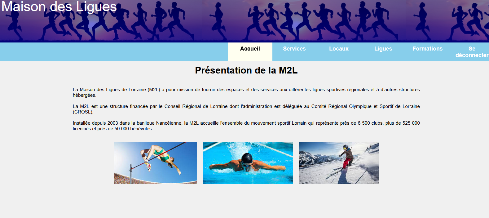
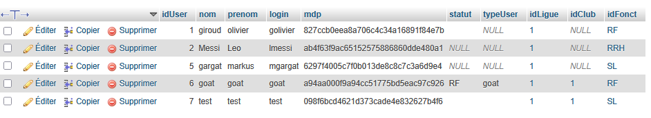
▸ Exploiter des référentiels, normes et standards adoptés par le prestataire informatique
J’ai respecté les normes du développement PHP objet imposées par le projet, en utilisant une architecture MVC et en appliquant les standards de codage pour l’organisation des fichiers. De plus, j’ai veillé à ce que le code soit conforme aux recommandations du prestataire pour garantir une solution sécurisée et maintenable.
▸ Mettre en place et vérifier les niveaux d’habilitation
J’ai implémenté un système d'authentification et de gestion des droits d’accès, permettant aux administrateurs de gérer les formations, tandis que les utilisateurs normaux ne pouvaient que consulter et inscrire leurs demandes. Cette gestion des rôles était basée sur des niveaux d’habilitation distincts, assurant une restriction adéquate des actions possibles selon le statut des utilisateurs.
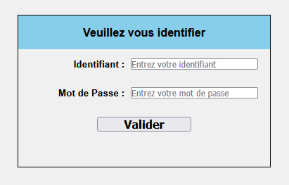
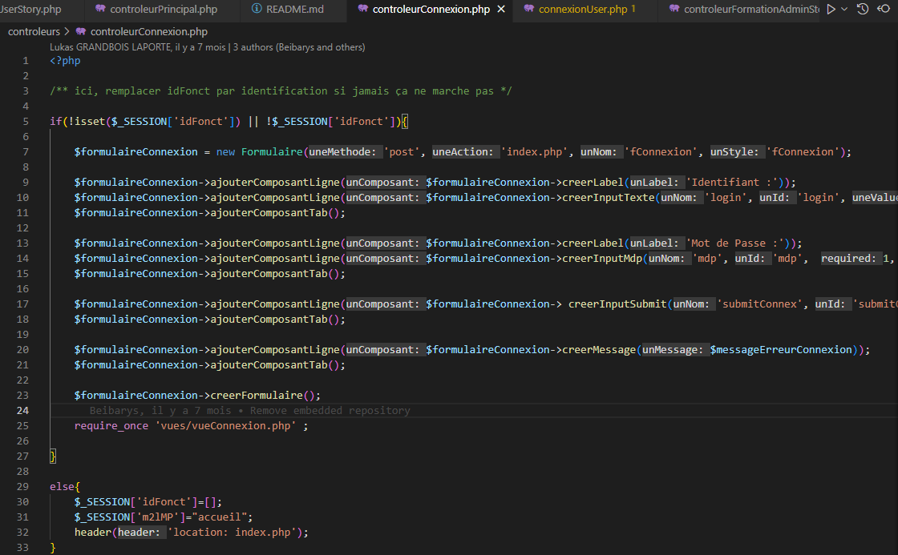
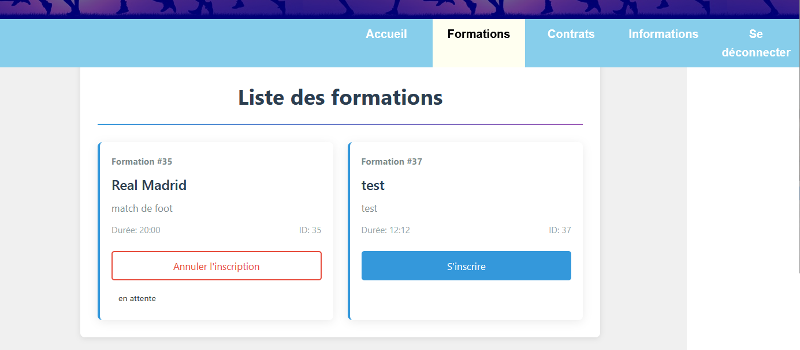
▸ Vérifier les conditions de la continuité d’un service informatique
J’ai participé à la mise en place d’un environnement de développement stable en utilisant GitLab pour gérer les versions du projet. Cela a permis de garantir la continuité des services en permettant un suivi clair des évolutions, avec des commits réguliers pour éviter tout problème en production.
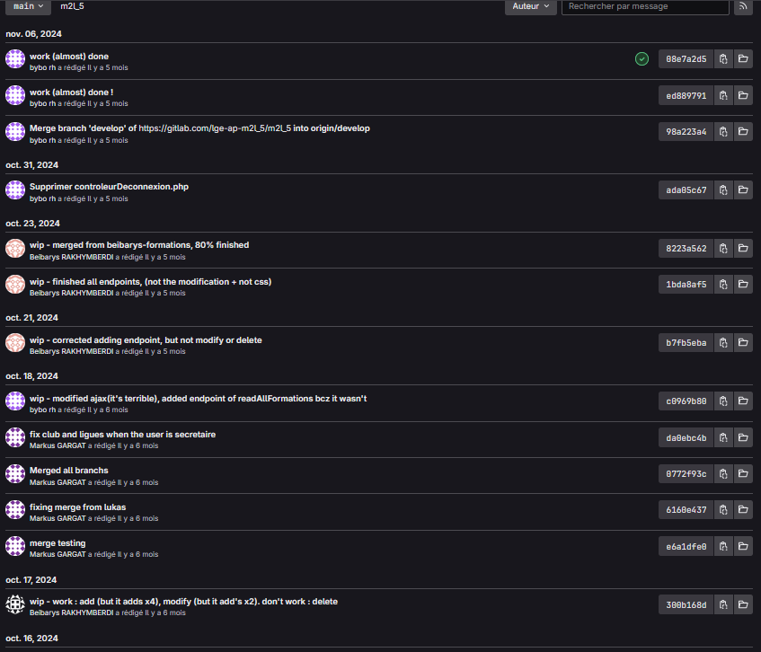
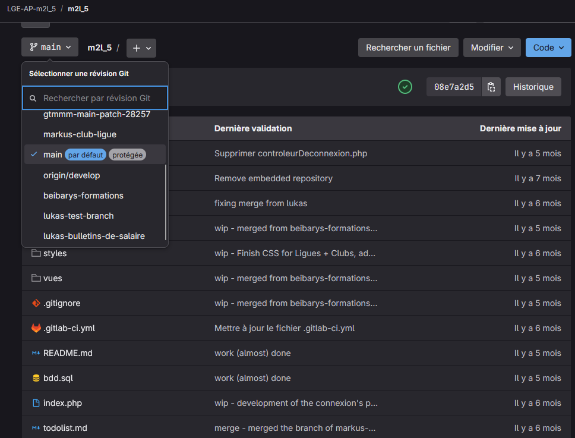
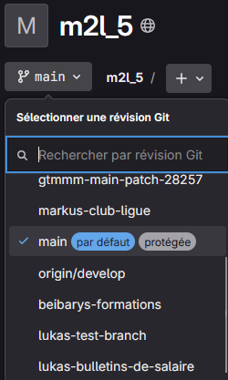
▸ Gérer des sauvegardes
Grâce à GitLab, j’ai assuré la gestion des sauvegardes du code en versionnant toutes les modifications apportées au backend et à la base de données. Cela a permis de garantir la récupération rapide du travail en cas de besoin, en assurant une protection contre toute perte de données.
🏠 M2l - dynamique – ▸ Répondre aux incidents et aux demandes d’assistance et d’évolution
Sous-compétence
Description de l'action
Illustration(s)
▸ Traiter des demandes concernant les applications
En tant que développeur backend, j’ai traité les demandes liées aux formations (inscription, consultation, et suppression de demandes). J’ai conçu l’application pour que les utilisateurs puissent interagir avec les formations de manière fluide et sécurisée, tout en respectant les besoins de l’organisation.
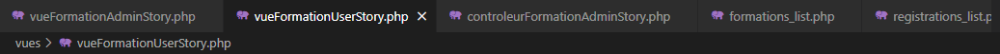
🏠 M2l - dynamique – ▸ Travailler en mode projet
Sous-compétence
Description de l'action
Illustration(s)
▸ Analyser les objectifs et les modalités d’organisation d’un projet
Dans ce projet, j’ai analysé les objectifs de la M2L concernant la gestion des formations et l'authentification des utilisateurs. J’ai intégré des fonctionnalités permettant une gestion claire et différenciée des droits d’accès tout en respectant la sécurité des données, ce qui correspondait aux attentes de la M2L.
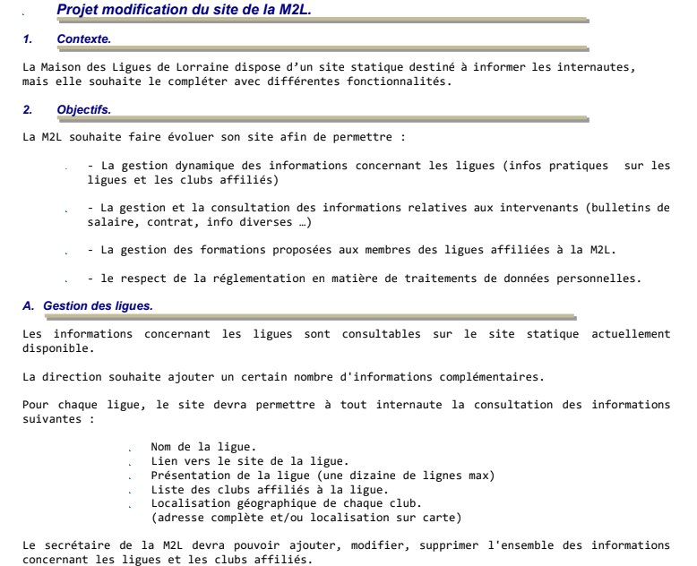
▸ Planifier les activités
Bien que nous n'ayons pas utilisé Trello formellement, nous avons planifié les différentes phases du projet via un tableau de suivi sur Google Drive. J’ai contribué à la répartition des tâches en définissant les étapes nécessaires à la mise en place de l’authentification et à la gestion des formations, en respectant le délai global de 20 heures alloué pour le projet.
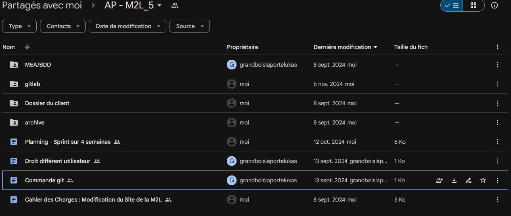
🚊 OYE TBM
🚊 OYE TBM – ▸ Développer la présence en ligne de l’organisation
Sous-compétence
Description de l'action
Illustration(s)
▸ Participer à l’évolution d’un site Web exploitant les données de l’organisation
J’ai conçu et présenté une extension numérique innovante pour la TBM, ce qui contribue à améliorer son image publique et à répondre à des besoins concrets des usagers.
🚊 OYE TBM – ▸ Travailler en mode projet
Sous-compétence
Description de l'action
Illustration(s)
▸ Analyser les objectifs et les modalités d’organisation d’un projet
J’ai défini les objectifs du projet d’extension TBM avec mon équipe et préparé une roadmap claire que nous avons suivie pendant les 24 heures du challenge.
▸ Planifier les activités
J'ai planifié les étapes principales du projet, depuis la modélisation de la base de données jusqu’à la création de la maquette et la présentation finale.
🚊 OYE TBM – ▸ Organiser son développement professionnel
Sous-compétence
Description de l'action
Illustration(s)
▸ Gérer son identité professionnelle
J’ai pitché le projet devant un jury, ce qui m’a permis de travailler ma communication et ma posture professionnelle.
▸ Développer son projet professionnel
J’ai contribué à la conception d’un projet concret et innovant qui pourrait être exploité dans un contexte professionnel, ce qui s’inscrit dans ma démarche de développement de carrière.


 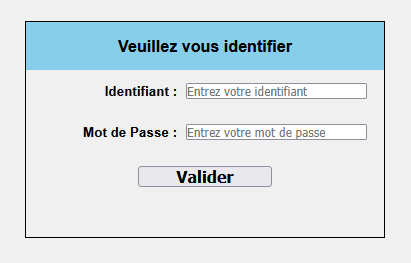
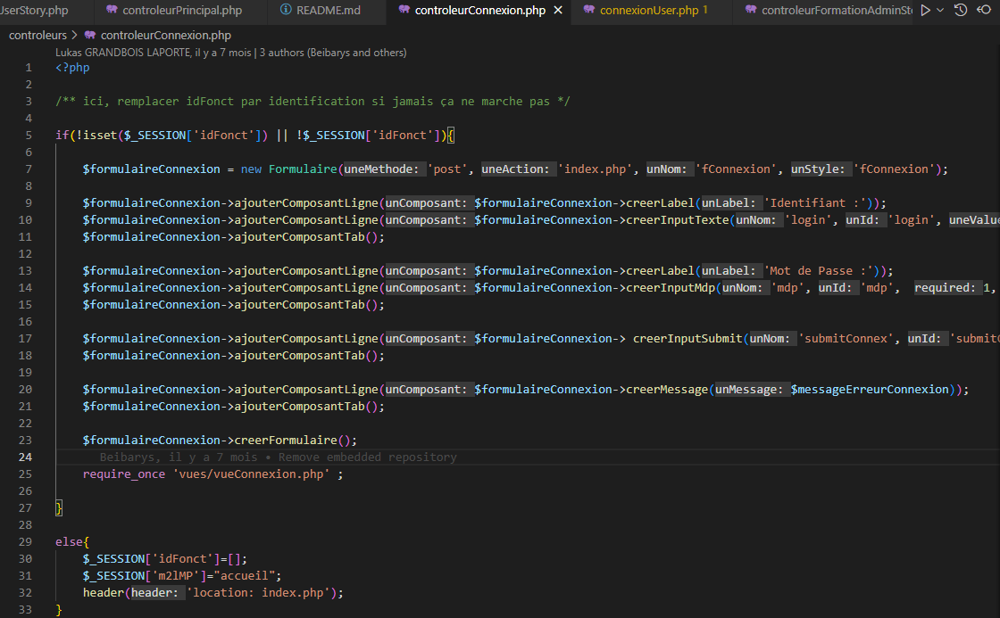
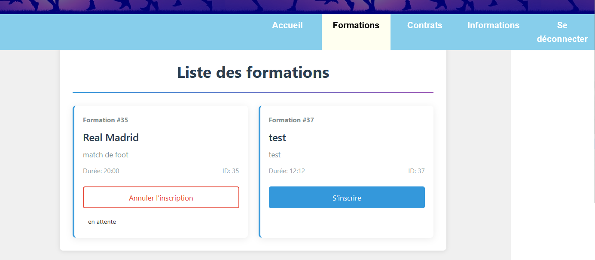
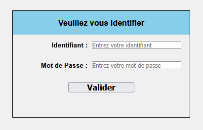
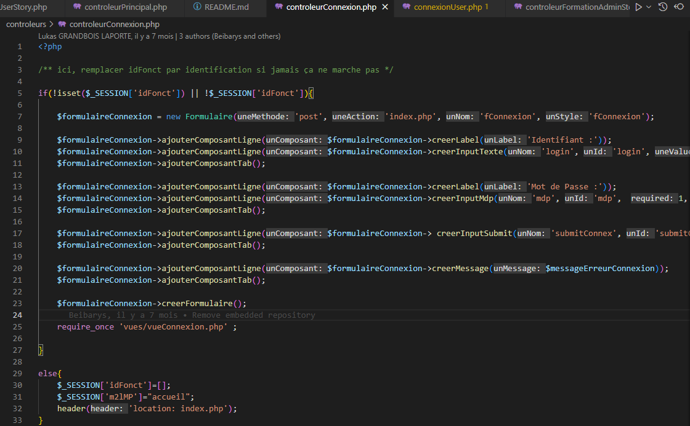
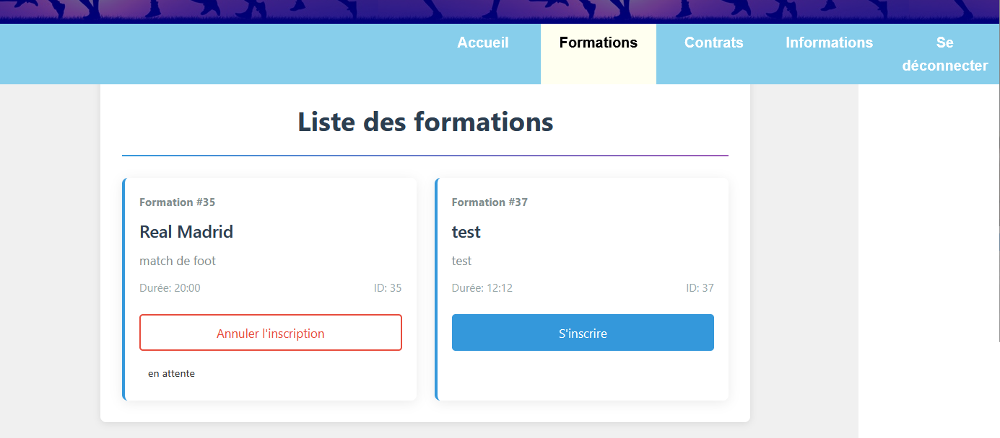